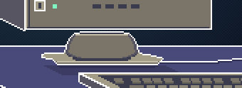

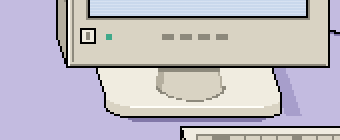
What changed, what was checked, and the limits · Open local preview
Captures from the working site with the invitation effects hidden. Before and after use the same viewports and the same 2× display scale. The wide canvas grew from 510×270 to 576×330 for this pass, so the close-ups are of the same parts rather than of identical rectangles; the full-page views compare directly. Close-ups are shown at a further 2× with nearest-neighbour scaling, so one artwork pixel is a 4×4 block.
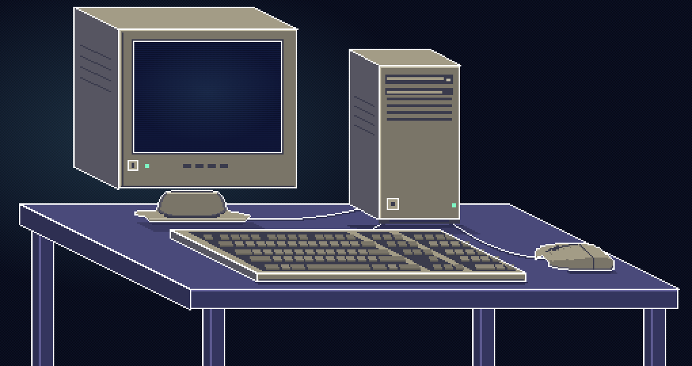
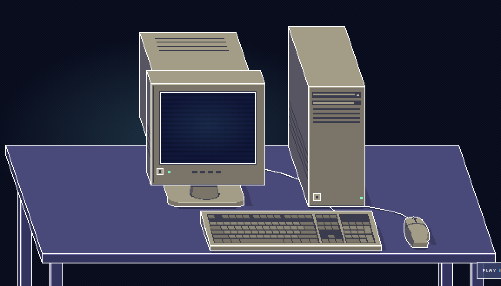
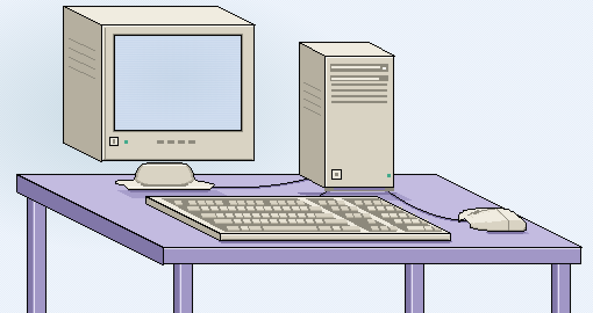
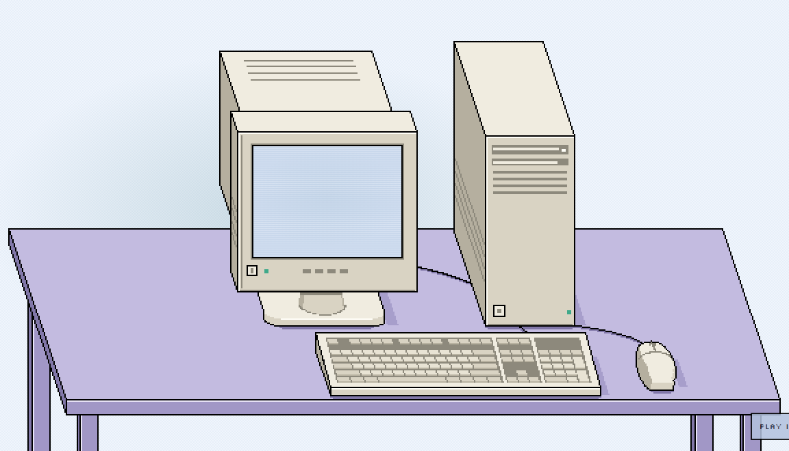
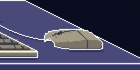
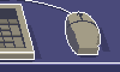
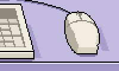


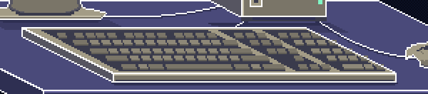
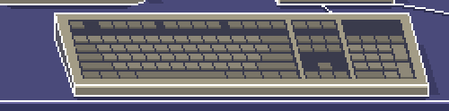
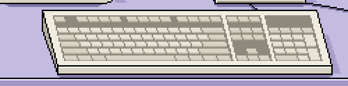
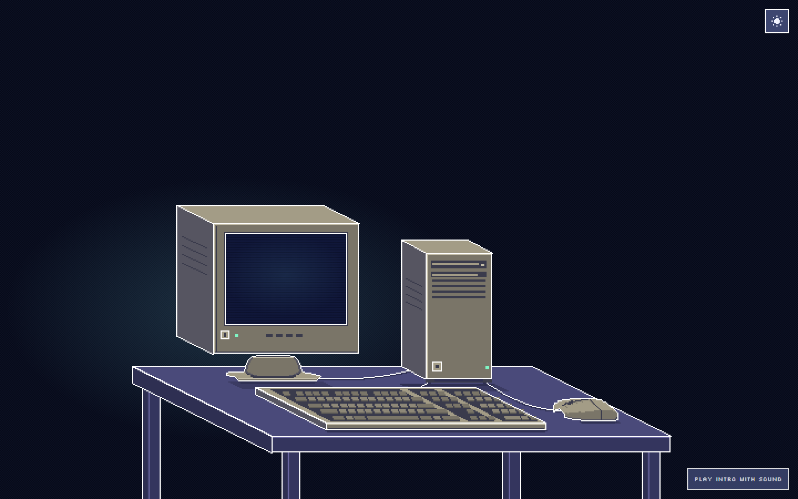
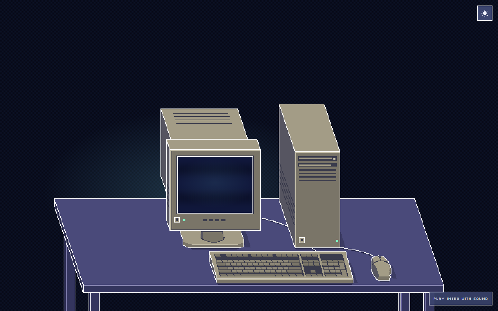
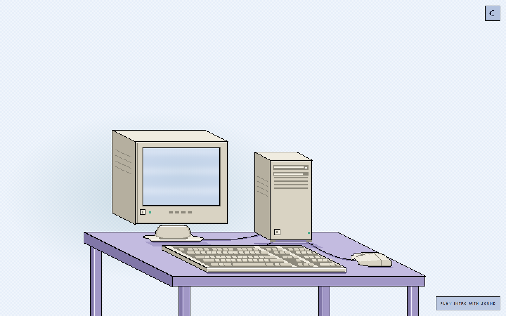
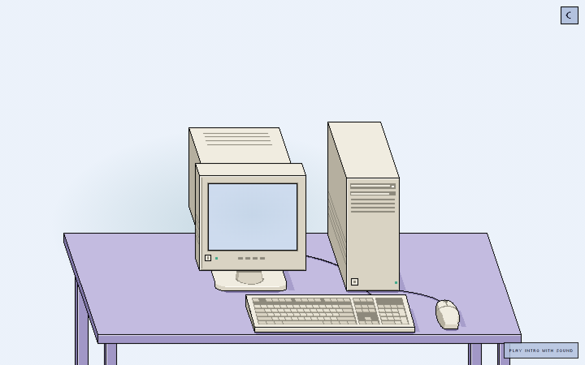
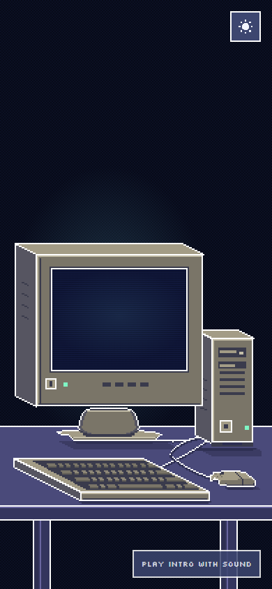
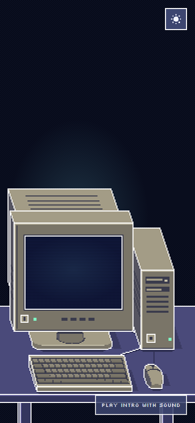
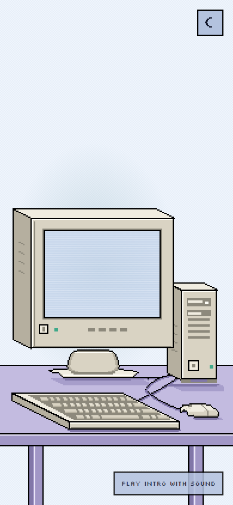
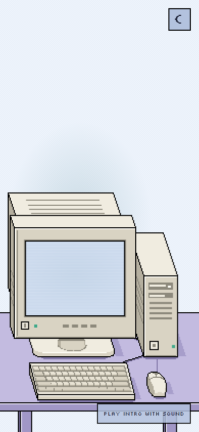
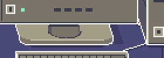
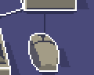

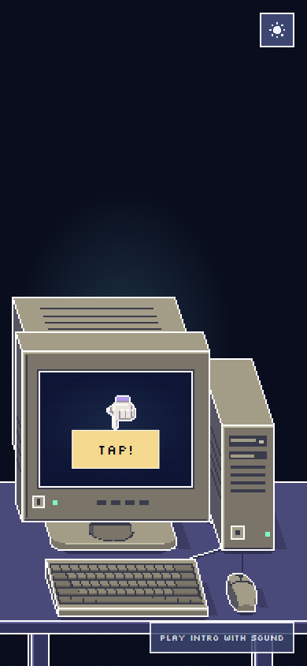
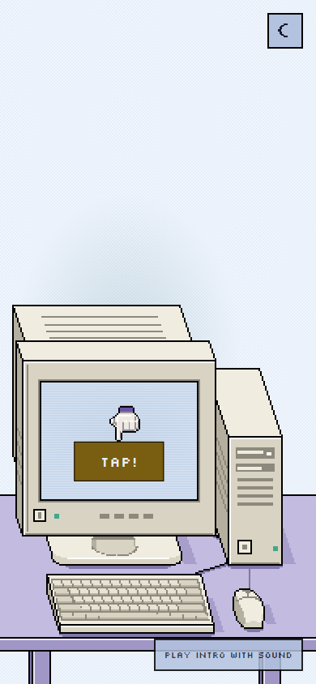
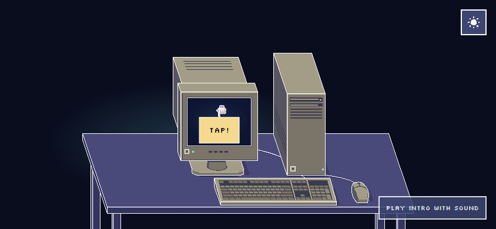
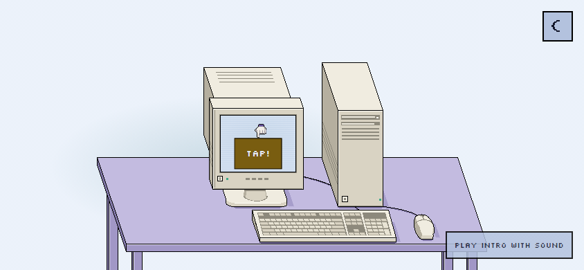
Local review evidence only. Work remains uncommitted and is not deployed.